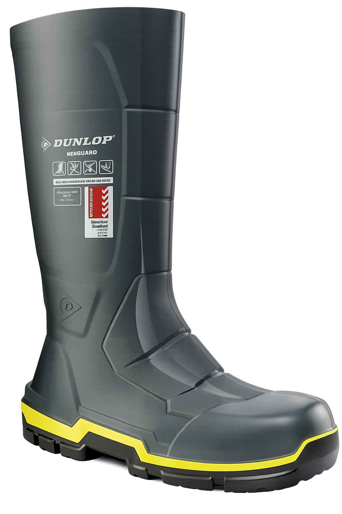

Protecting miners’ feet in harsh underground conditions
Далд уурхайн орчин нөхцөлд уурхайчдын хөлийг хамгаална

Safety boots are essential for underground miners, providing protection against falling objects, sharp rocks, slippery surfaces, and heavy equipment.
They are designed with steel or composite toe caps, puncture-resistant soles, and slip-resistant treads to ensure maximum safety.
Далд уурхайн ажилчдын хувьд аюулгүйн гутал нь хөл дээр унаж болзошгүй зүйлс, хурц ирмэгтэй чулуу, гулгамтгай гадаргуу, хүнд тоног төхөөрөмж зэргээс хамгаалах чухал хэрэгсэл юм.
Эдгээр гутал нь ган эсвэл нийлмэл хамгаалалттай хошуу бүхий, нэвт хатгалтаас хамгаалсан, мөн хальтрах гулсахаас сэргийлсэн материал бүхий ултай бүтээгддэг.
Protects toes from falling rocks and equipment.
Хөл дээр унаж болзошгүй чулуу, бусад хүнд зүйлс, хөлийг дайрч болзошгүй тоног төхөөрөмжөөс хөлийн хурууг хамгаална.
Prevents injuries from sharp underground objects.
Далд уурхайн орчин дахь хурц зүйлс дээр гишгэж гэмтэхээс сэргийлнэ.
Provides traction on wet or uneven surfaces.
Нойтон болон жигд бус гадаргуу дээр тогтвортой алхах боломжтой.
Built to withstand underground conditions.
Далд уурхайн хатуу, хүнд нөхцөлд тэсвэртэй.
⬅ Back to Main Page / Үндсэн хуудас уруу буцах
1. What feature protects miners’ toes?
Rubber sole
Steel or composite toe cap
Waterproof lining
2. Why is a puncture-resistant sole important?
Prevents slipping
Stops sharp objects from injuring feet
Keeps boots waterproof
3. What helps miners walk safely on wet surfaces?
Slip-resistant tread
Steel toe cap
Puncture-resistant sole